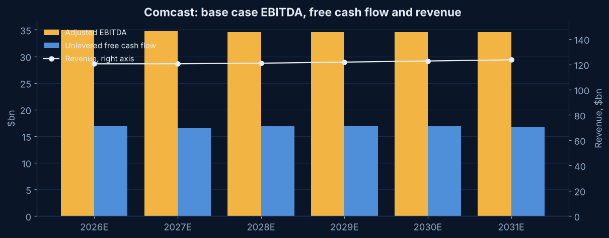
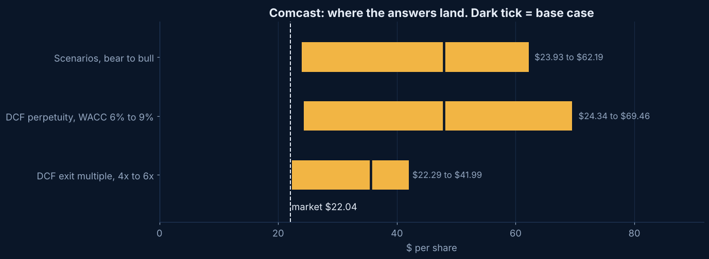

Project
Comcast DCF model.
The one the model cannot reconcile. At $22 the market is pricing Comcast as a business that shrinks forever, and the filings do not show that.
Why this company
The levered media company that is unwinding itself
Comcast is what Skydance would look like after a decade: cable distribution, a studio, theme parks, a streaming service that just turned profitable, and 2.3 times leverage. It spun off its cable networks into Versant in January 2026 and on June 29 announced it will spin NBCUniversal and Sky in mid 2027. Buybacks are suspended until then. So this is a company in the middle of becoming a broadband utility.
I value it as it is today, before the spin, on nine months of 2026 actuals. That is the only basis the filings support.
The result
The numbers
Base case, perpetuity method at a 7.2 percent WACC and 0.5 percent long term growth. More than twice the $22.04 price.
Base case, exit multiple method at 5.5 times 2031 EBITDA. The market pays 4.5 times today and paid 6 to 7 for most of the last decade.
Perpetual decline in cash flow that the price implies. The bear case, with connectivity falling 3 percent a year and margins down to 25 percent, still lands at $24 to $29.
Exit multiple the price implies. Below where any large cable company has traded outside a crisis.
WACC. Half of Comcast's capital is debt at 3.9 percent after tax, which is why the discount rate is the lowest of the five and the value is the most sensitive to it.
Share of value past 2031.
Model outputs under stated assumptions. Nothing on this page is a recommendation to buy or sell anything.
How it is built
Inputs that differ from the template
- Base year. 2026 as now reported, without Versant and from the second quarter without Sky Deutschland. Nine months of $90.7 billion of revenue and $25.9 billion of adjusted EBITDA, annualized to $120.5 billion and $35 billion.
- Revenue. Two lines. Connectivity and Platforms, $79 billion, falls 1 percent a year then flattens as price offsets broadband losses. Content and Experiences, $41.5 billion net of eliminations, grows 2 percent.
- EBITDA. Margin 29 percent drifting down to 28. Separation costs of $500 million in 2026, $800 million in 2027 and $300 million in 2028, which are my estimates.
- Cash flow. Capex 9.5 percent of revenue. Depreciation of $16 billion a year shelters a lot of the profit from cash tax, which is a real reason cable cash flow is high relative to EBITDA.
- Discount rate. Unlevered beta 0.7, 1.0 debt to equity, levered beta 1.24, cost of equity 10.5 percent, cost of debt 5 percent. Market weights give 7.2 percent.
- Equity bridge. $87.4 billion of debt, $7.6 billion of cash, 3,551 million shares from the October 15 cover.
Charts
Two pictures

Base case EBITDA, free cash flow and revenueFlat revenue, flat EBITDA, and unlevered free cash flow of about $17 billion a year. The market enterprise value is about nine years of that. 
Where the answers landEvery range starts above the price. That is unusual and it is the finding, not a reason to trust the model more.


What I got wrong first
I believed the first answer
The first build gave $60 a share at a 6.6 percent WACC, 1 percent growth and a 6.5 times exit. A number like that on a $78 billion company is not a finding, it is a warning. I raised the beta, cut growth to 0.5 percent, cut the exit multiple to 5.5 and ran the bear case harder. It still lands at $36 to $48. So the right page to write was not one that says Comcast is cheap. It is one that says what the price assumes, which is a 6 percent a year decline forever, and lets the reader decide whether broadband and parks do that.
What would change the answer
In order of how much they move it
- The discount rate. Each point of WACC is worth $8 to $15 a share on the perpetuity method. If the spin leaves the broadband company with a higher cost of debt, this moves fast.
- Broadband losses. Comcast is losing subscribers to fixed wireless and fiber. The bear case runs connectivity down 3 percent a year. The price implies worse.
- The spin itself. A sum of the parts after mid 2027 is a different model with two balance sheets, and the S-4 or Form 10 is the document to build it from.
- Theme parks. Segment EBITDA fell 17 percent in the third quarter of 2026 on a tough Epic Universe comparison. I grow the segment 2 percent, which may be generous.
Download
The model
Download the Excel model · Back to the five
Blue cells are inputs. Pick a scenario in Inputs cell C5. The 2026 base year is annualized from nine months and labelled as such. Nothing in the model comes from a Bloomberg Terminal or from any employer.